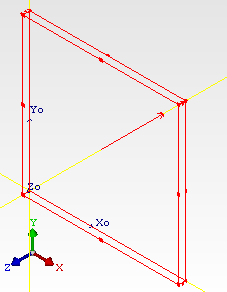

Dies
can be modeled as uniform or non-uniform sources of heat.
Procedure
- Select an assembly in the data tree.
- In the New Object Palette, choose Project Manager
Create or Drawing Board Create and double-click the Die icon.
By
default, a die is modeled with a single uniform source spread across
its surface.
- To define a non-uniform distribution, open the Construction tab of the property
sheet, change Power Dissipation Type from Uniform Dissipation to
Non-Uniform Dissipation and either define the power distribution
based on total coverage or by defining discrete sources.
Results
By default, the Die SmartPart is located at
the origin of the parent assembly with a physical size 4.9 mm × 4.9 mm × 0.22 mm,
with a defined material type of Silicon (Pure).
A die is displayed in the drawing board showing
the source direction, see Figure 1.
Figure 1. Die SmartPart in Drawing Board
Showing Source Direction
Dies can be decomposed. Decomposed dies comprise
a Cuboid and one or more Sources, depending on the source distribution
over the surface of the die.